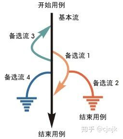

场景法
定义
从起点，通过一系列操作步骤（事件），达成某一结果，到终点的过程测试。 场景法主要用于冒烟测试。在通过了场景测试后，再通过其他方法进行更为细腻的测试。
概念及定义
现在的软件几乎都是由事件触发来控制流程的， 事件触发时的情景便形成了场景， 而同一事件不同的触发顺序和处理结果形成事件流。
要素
下图中经过用例的每条不同路径都反映了基本流和备选流，都用箭头来表示。基本流用直黑线来表示，是经过用例的最简单的路径。每个备选流自基本流开始，之后，备选流会在某个特定条件下执行。备选流可能会重新加入基本流中（备选流 1 和 3），还可能起源于另一个备选流（备选流 2），或者终止用例而不再重新加入某个流（备选流 2 和 4）。 
说明
遵循上图中每个经过用例的可能路径，可以确定不同的用例场景。从基本流开始，再将基本流和备选流结合起来，可以确定以下用例场景： 场景 1 基本流 场景 2 基本流 备选流 1 场景 3 基本流 备选流 1 备选流 2 场景 4 基本流 备选流 3 场景 5 基本流 备选流 3 备选流 1 场景 6 基本流 备选流 3 备选流 1 备选流 2 场景 7 基本流 备选流 4 场景 8 基本流 备选流 3 备选流 4 注：为方便起见，场景 5、6 和 8 只描述了备选流 3 指示的循环执行一次的情况。
例子（语音通话）